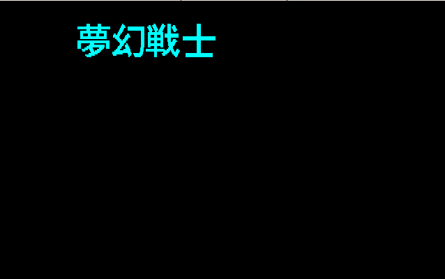
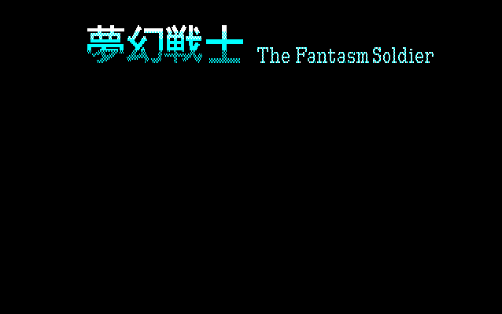
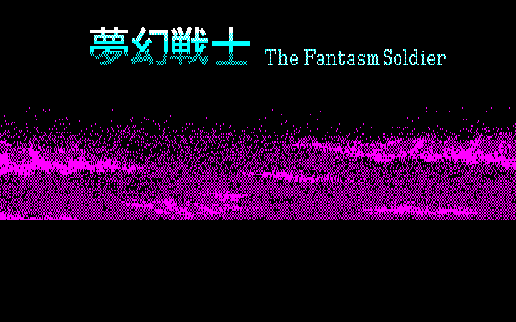

완성 화면을 그대로 받아들이지 않고, 무엇이 먼저 나타나는지 관찰합니다.
이 강좌는 무엇을 가르치는가
4부에서는 reg, disasm, dump, breakpoint를 어떻게 사용하는지 배웠습니다. 5부에서는 같은 명령을 단순히 따라 치는 것이 아니라 어떤 질문이 생겼을 때 어떤 도구를 선택하는지를 실제 게임으로 연습합니다.
목표는 바리스 타이틀 CG의 형식을 모두 해독하는 것이 아닙니다. 화면에 보이는 결과를 보고, “어디에서 시작해 무엇을 확인하면 다음 단서가 나오는가?”를 스스로 판단하는 것입니다.
초보자용 guided investigationQUASI88 Monitor실제 관찰 로그확인과 추측 구분
PC와 register를 출발점으로 메모리를 읽고 쓰는 흐름을 따라갑니다.
실행 위치, breakpoint 결과, 전후 값을 기록해 다음 판단으로 이어 갑니다.
00 · BEFORE WE START
4부에서 배운 도구를 실제 분석에 배치하기
5부에서는 새로운 명령을 많이 외우지 않습니다. 4부에서 배운 도구를 질문에 맞게 선택하는 순서를 연습합니다. 아래 표를 먼저 보고, 각 명령을 입력할 때 “무엇을 알고 싶어서 쓰는가?”를 생각합니다.
| 알고 싶은 것 | 사용할 도구 | 이번 사례에서 하는 일 |
|---|---|---|
| 지금 CPU가 어디에 있는가 | reg | PC와 pointer register를 기록합니다. |
| 현재 위치에서 무슨 명령을 실행하는가 | disasm | 현재 PC부터 반복·분기·호출을 읽습니다. |
| 특정 주소에 어떤 값이 있는가 | dump | register가 가리킨 메모리를 직접 확인합니다. |
| 어느 Code가 실행되는가 | PC breakpoint | 호출된 후보 루틴에 실제로 들어가는지 잡습니다. |
| 누가 값을 바꾸는가 | WRITE breakpoint | 출력 후보에 쓰기가 발생하는 순간을 잡습니다. |
본문에서 계속 사용하는 여섯 단어
CPU가 읽거나 계산에 사용하는 값과 바이트열입니다.
CPU가 명령으로 실행하는 바이트열입니다. disasm은 이를 읽기 쉽게 보여 줍니다.
특정 일을 하도록 묶여 CALL과 RET로 드나드는 Code 구간입니다.
메모리의 값을 CPU가 가져오는 동작입니다. 값의 출처를 찾을 때 봅니다.
CPU가 계산 결과를 메모리에 기록하는 동작입니다. 화면 변화의 목적지를 찾을 때 봅니다.
다음에 읽거나 쓸 메모리 주소를 담은 register 값입니다. HL이 대표적입니다.
실습 규칙
명령을 입력한 뒤에는 결과를 그대로 넘기지 말고, ① 현재 PC ② 사용된 주소 ③ 반복 또는 CALL ④ 다음에 확인할 이유를 한 줄씩 적습니다. 이 기록이 곧 분석 과정이 됩니다.
01 · OBSERVE FIRST
한 화면도 한 번에 만들어지지 않는다
분석은 Monitor 명령부터 시작하지 않습니다. 먼저 화면에서 어떤 변화가 일어나는지 관찰합니다. 완성된 한 장만 보면 모든 글자와 배경이 한 번에 그려진 것처럼 보이지만, 실제로는 출력 순서가 단서가 될 수 있습니다.




그림을 시간 순서로 읽는 법
첫 글자에서 영문 부제로
첫 글자와 영문 부제가 서로 다른 시점에 등장합니다. 따라서 둘이 항상 하나의 문자열 블록이라고 단정할 이유가 없습니다.
영문 부제에서 배경으로
배경이 나중에 추가됩니다. 화면의 배경 처리와 글자 처리가 분리된 Code일 가능성을 생각할 수 있습니다.
배경에서 완성 타이틀로
큰 「ヴァリス」와 크레딧이 마지막에 나타납니다. “무엇이 먼저인가?”는 중지 시점을 정하는 기준이 됩니다.
관찰의 역할
이 네 장의 순서는 어떤 요소를 먼저 추적할지 정하는 출발점입니다. 화면 변화가 다음 조사 지점을 안내합니다.
이번 사례에서 고를 현상: 초기에 표시되는 「夢幻戦士」 그림은 어떤 Data와 Code를 거쳐 화면에 나타나는가?
화면 변화관심 요소 하나 선택실행 중지Code와 Data 연결실제 접근 검증
02 · ASK A SMALL QUESTION
처음부터 게임 전체를 이해하려 하지 않는다
“타이틀 화면은 어떻게 만들어졌나?”는 너무 큰 질문입니다. 초보자가 시작하기 좋은 질문은 화면의 한 요소와 동작 하나로 줄인 질문입니다.
이번 강좌의 질문을 작게 만드는 과정
큰 질문 — 타이틀 CG 전체는 어떻게 출력되는가?
작은 질문 — 「夢幻戦士」가 나타나는 동안 CPU는 어떤 메모리를 처리하는가?
검증 질문 — 그 처리 Code가 실제로 메모리에 WRITE하는가?
화면에 글자가 보인다고 문자열은 아니다
1부에서 배운 것처럼 화면의 글자는 여러 방식으로 만들어질 수 있습니다.
문자 코드 + Font타일/그래픽 Data직접 GVRAM 쓰기
일반 대사라면 사람이 읽을 수 있는 문자열을 찾는 방법이 유효할 수 있습니다. 하지만 타이틀의 큰 로고는 글자 모양 자체가 그래픽 Data일 수 있습니다. 따라서 이번에는 문자열 검색으로 시작하지 않고, 화면이 변하는 순간의 실행 흐름을 관찰합니다.
기억할 점: 분석 대상은 “문자처럼 보이는 것”이 아니라 “화면에 나타난 결과”입니다. 어떤 표현 방식인지는 Code와 Memory를 확인한 뒤 결정합니다.
03 · STOP WITHOUT A PRESET ADDRESS
타이틀 화면에서 현재 위치부터 읽는다
처음부터 05AD나 061F를 입력하지 않습니다. 그런 주소는 나중에 실행 흐름을 따라가며 발견할 후보입니다. 먼저 타이틀 화면이 진행되는 동안 Monitor로 들어가 현재 CPU 상태를 확인합니다.
두 명령의 목적
reg
CPU의 현재 register를 보여 줍니다. 특히 PC는 지금 실행할 instruction의 주소이고, HL은 메모리를 가리키는 pointer로 자주 사용됩니다.
disasm #64
주소를 생략했으므로 현재 PC부터 64개 instruction을 보여 줍니다. 현재 위치 앞을 미리 알고 조사하는 명령이 아닙니다.
QUASI88> reg
[MAIN]
AF:4400[........] BC:0150 DE:DADF HL:DAC4 IX:3300 PC:04DA
A':C47D[.Z.H.P.C] B':0050 D':0800 H':615A IY:E55C SP:00FE
QUASI88> disasm #64
04DA 23 INC HL
04DB CB1E RR (HL)
04DD 23 INC HL
04DE CB1E RR (HL)
04E0 23 INC HL
04E1 CB1E RR (HL)
04E3 23 INC HL
04E4 CB1E RR (HL)
...
0519 23 INC HL
051A CB1E RR (HL)
052B 23 INC HL
052C 05 DEC B
052D C2B404 JP NZ,04B4H
0530 EB EX DE,HL
0531 015000 LD BC,0050H
0534 09 ADD HL,BC
0535 EB EX DE,HL
0536 DD25 +DEC IXH
0538 C2AC04 JP NZ,04ACH
053B C9 RET
QUASI88>
로그를 한 줄씩 해석하기
| 보이는 것 | 초보자용 해석 | 이 단계에서 말할 수 있는 범위 |
|---|---|---|
PC=04DA | CPU가 다음에 실행할 위치입니다. | 현재 화면이 만들어지는 중에 04DA 부근에서 멈췄습니다. |
HL=DAC4 | HL이 가리키는 메모리를 명령이 사용할 가능성이 큽니다. | 처리 대상 pointer 후보입니다. 아직 화면 주소라고 단정하지 않습니다. |
INC HL | HL을 1 증가시켜 다음 바이트 쪽으로 이동합니다. | 연속된 위치를 순서대로 훑는 흐름으로 보입니다. |
RR (HL) | HL이 가리키는 메모리 값을 오른쪽 회전시킵니다. | 메모리 값을 실제로 바꾸는 instruction이 반복됩니다. |
DEC B / JP NZ | B를 줄이고 0이 아니면 04B4로 돌아갑니다. | 작은 반복문이 끝나는 조건을 볼 수 있습니다. |
LD BC,0050ADD HL,BC | HL에 0x50을 더해 다음 처리 위치로 이동합니다. | 행 또는 블록 간 간격(stride) 후보가 보입니다. |
DEC IXH / JP NZ | IX의 상위 바이트를 줄이고 04AC로 반복합니다. | 안쪽 반복보다 큰 반복이 하나 더 있을 수 있습니다. |
RET | 현재 루틴을 호출한 곳으로 돌아갑니다. | 이 루틴을 부른 상위 Code를 stack에서 찾을 수 있습니다. |
다음 조사의 방향이 정해졌다
타이틀 표시 중 현재 CPU가 연속 메모리를 RR로 처리하는 반복문 안에 있었다는 사실을 바탕으로, 반복문의 시작점과 준비 Code를 확인하는 단계로 넘어갑니다.
04 · FOLLOW THE BRANCH BACKWARD
출력에 잘린 앞부분을 근거로 범위를 넓힌다
방금 로그의 끝에는 JP NZ,04B4H와 JP NZ,04ACH가 있었습니다. 이것은 반복문이 04B4와 04AC에서 다시 시작한다는 뜻입니다. 그런데 현재 화면은 04DA에서 시작했으므로, 반복문 진입점과 그 앞의 준비 명령이 잘려 있습니다.
새 질문: 04AC와 04B4에 들어오기 전에 HL, IX, 화면 평면은 어떻게 준비되는가?
그래서 이번에는 현재 PC가 아니라, 발견한 진입점보다 조금 앞인 04A0부터 짧게 확인합니다. 주소를 미리 알고 시작한 것이 아니라 JP가 가리킨 주소를 따라 조사 범위를 정한 것입니다.
QUASI88> disasm 0x04A0 #72
04A1 D35C OUT (5CH),A
04A3 DD2648 +LD IXH,48H
04A6 2100D4 LD HL,D400H
04A9 114FD4 LD DE,D44FH
04AC EB EX DE,HL
04AD 7E LD A,(HL)
04AE CB3F SRL A
04B0 EB EX DE,HL
04B2 DD +DB DDH
04B3 0602 LD B,02H
04B4 CB1E RR (HL)
04B6 23 INC HL
04B7 CB1E RR (HL)
04B9 23 INC HL
...
OUT (5CH),A
1부에서 배운 PC-88 GVRAM 평면 선택과 연결되는 I/O입니다. 적어도 “메모리 처리 전에 화면 쪽 선택이 있다”는 단서를 줍니다.
LD HL,D400H
반복 처리에 사용할 시작 pointer가 D400으로 준비됩니다. 이것만으로 D400이 최종 로고 Data라고 확정할 수는 없습니다.
LD DE,D44FH + EX DE,HL
두 pointer를 바꿔가며 원본을 읽고 결과를 처리하는 구조일 수 있습니다. 실제 역할은 WRITE와 주변 Code로 검증해야 합니다.
SRL A와 RR (HL)
bit를 이동·회전시키는 명령이 이어집니다. 그래픽 bitplane 처리 가능성을 세울 수 있지만, 아직 가설입니다.
이 단계의 결론: 현재 PC 주변의 반복문 앞에는 화면 평면 선택, pointer 준비, bit 처리 명령이 함께 있습니다. 이제 실제 쓰기를 확인하는 단계로 진행할 수 있습니다.
05 · VERIFY WITH A WRITE BREAKPOINT
추측을 실제 메모리 접근으로 바꾼다
디스어셈블리에서 RR (HL)이 보여도, 실제 실행 중 어느 주소에 쓰기가 일어나는지는 별도로 확인해야 합니다. 그래서 처리 구간의 한 주소에 WRITE breakpoint를 겁니다.
PC breakpoint
“이 instruction이 언제 실행되는가?”를 묻습니다.
WRITE breakpoint
“누가 이 메모리 주소의 값을 바꾸는가?”를 묻습니다. 이번 단계의 질문에 맞는 기능입니다.
QUASI88> break write 0xD4A1 #1
set break point MAIN - #1 [ WRITE : D4A1H ]
QUASI88> g
*** Break at 04B9H *** ( MAIN[#1] : WRITE addr=D4A1H, data=00H )
[MAIN]
AF:0044[.Z...P..] BC:0250 DE:D4EF HL=D4A1 IX=4600 PC=04B9
04B7 CB1E RR (HL)
------> 04B9 23 INC HL
04BA CB1E RR (HL)
왜 04B9에서 멈췄을까?
중지 줄의 위에는 RR (HL), 현재 HL은 D4A1입니다. RR (HL)은 HL이 가리키는 메모리를 읽고 결과를 다시 같은 위치에 기록하므로, WRITE 감시점이 이 반복문 안에서 잡힌 것은 자연스럽습니다.
표시된 data=00H는 “아무 일도 없었다”는 뜻이 아닙니다. 값이 이전과 같을 수도 있지만, CPU가 해당 주소에 쓰기 사이클을 발생시켰다는 사실은 확인됩니다.
초보자 체크리스트
- 어떤 주소를 감시했는가? —
D4A1 - 어느 PC에서 멈췄는가? —
04B9 - 주변 instruction은 무엇인가? —
RR (HL) → INC HL - 따라서 무엇을 확정하는가? — 이 루프가 실제 메모리 WRITE를 수행함
06 · FIND THE CALLER
현재 루틴을 누가 불렀는지 stack으로 거슬러 올라간다
현재 루틴이 무엇을 하는지 어느 정도 확인했으면, 다음 질문은 “이 루틴은 타이틀 흐름에서 언제 호출되는가?”입니다. CALL을 실행하면 CPU는 돌아갈 주소를 stack에 저장합니다. 따라서 SP와 그 주변 메모리에서 호출 문맥을 찾을 수 있습니다.
반환 주소 읽는 법
QUASI88> dump 0x00F0 #32
00F0 : 09 24 2A D8 50 02 10 FF 0A 07 44 00 02 05 F1 03
0100 : F3 31 00 01 CD 78 06 FB 11 00 22 CD 80 EC 30 05
SP = 00FE
00FE의 두 바이트 = F1 03
little-endian 해석 = 03F1
Z80은 이 반환 주소를 little-endian으로 stack에 저장합니다. 낮은 바이트 F1이 먼저, 높은 바이트 03이 다음에 있으므로 F1 03은 주소 03F1입니다. 03F1은 CALL이 끝난 뒤 돌아갈 위치이므로, 그 앞쪽에 호출 명령이 있습니다.
QUASI88> disasm 0x03D0 #40
03DB 21C5F6 LD HL,F6C5H
03DE 3E2A LD A,2AH
03E0 322006 LD (0620H),A
03E3 DD2618 +LD IXH,18H
03E6 CDAD05 CALL 05ADH
03E9 3E01 LD A,01H
03EB 327D08 LD (087DH),A
03EE CDA104 CALL 04A1H
03F1 3A7C08 LD A,(087CH)
03F4 3D DEC A
03F5 2007 JR NZ,03FEH
...
0407 18E5 JR 03EEH
여기서 처음 발견하는 주소
이제 05AD가 처음 등장합니다. 04A1을 호출하는 반복 흐름의 바로 앞에 CALL 05ADH가 있습니다. 따라서 05AD는 처음부터 주어진 정답이 아니라, 현재 루프의 호출자를 찾는 과정에서 새로 발견한 조사 대상입니다.
04DA에서 멈춤04AC/04B4 진입점 발견03F1 반환 주소03E6 CALL 05AD 발견05AD 조사
07 · INSPECT THE NEW CANDIDATE
05AD가 왜 다음 조사 대상이 되는가
호출자 주변에서 발견한 주소는 바로 믿지 않습니다. 그 주소의 Code가 앞에서 세운 가설과 맞는지 확인합니다.
QUASI88> disasm 0x05AD #64
05AD D35C OUT (5CH),A
05AF E5 PUSH HL
05B0 CD1F06 CALL 061FH
05B3 E1 POP HL
05B4 D35D OUT (5DH),A
05B6 E5 PUSH HL
05B7 CD1F06 CALL 061FH
05BA E1 POP HL
05BB D35E OUT (5EH),A
05BD E5 PUSH HL
05BE CD1F06 CALL 061FH
05C1 E1 POP HL
05C2 D5 PUSH DE
05C3 115000 LD DE,0050H
05C6 19 ADD HL,DE
05C8 DD25 +DEC IXH
05CA C2AD05 JP NZ,05ADH
05CD C9 RET
5C → 5D → 5E
세 GVRAM plane을 차례로 선택하는 흐름입니다. 같은 화면 좌표라도 plane마다 저장된 bit가 다를 수 있습니다.
같은 061F를 세 번 호출
각 plane에서 공통으로 실행되는 처리 Code 후보입니다. 그래서 다음에는 061F 진입 순간을 관찰합니다.
PUSH HL / POP HL
061F를 호출하는 동안 HL을 보존하려는 모습입니다. 호출 전후 pointer를 유지한다는 단서입니다.
HL += 0050와 IXH--
한 번 처리한 뒤 다음 간격으로 이동하고, 큰 반복 횟수를 줄입니다. 전체 화면 규칙까지 확정하는 것은 다음 분석 범위입니다.
다음 breakpoint를 정하는 근거: 05AD가 5C·5D·5E를 바꾸면서 같은 061F를 반복 호출하므로, 061F는 세 plane에 공통으로 적용되는 처리 지점일 가능성이 높습니다. 따라서 그 진입 상태에서 register를 읽습니다.
08 · CONNECT REGISTER, DATA, OUTPUT
061F에서 포인터 후보를 기록한다
QUASI88> g
*** Break at 061FH *** ( MAIN[#1] : PC )
[MAIN]
AF:1900[........] BC:005C DE:0000 HL:C50E IX:1800 PC:061F
A':C47D[.Z.H.P.C] B':0050 D':0800 H':4405 IY:E55C SP:00FA
05B0 CD1F06 CALL 061FH
------> 061F 0619 LD B,19H
0621 D9 EXX
일반 register와 보조 register
Z80에는 EXX로 서로 바꿔 쓸 수 있는 BC·DE·HL 보조 register 묶음이 있습니다. 화면에 HL과 H'가 함께 표시되는 이유가 이것입니다. 여기서는 EXX의 모든 동작을 다시 배우지 않고, 현재 보이는 두 주소를 각각 후보로 기록합니다.
HL=C50E
061F 호출 시 보이는 주 register pointer입니다. 처리 결과가 기록되는 출력 후보로 조사합니다.
H'=4405
보조 HL의 상위 바이트가 44이고, 당시 관찰에서는 4405 부근을 가리키는 입력 Data 후보로 나타났습니다.
IX=1800
IXH=18이라는 반복 관련 후보가 보입니다. 이것만으로 정확한 높이나 프레임 수를 확정하지 않습니다.
BC=005C
직전 05AD에서 선택한 I/O 값과 연결되는 단서입니다. register는 단독으로 해석하지 않고 호출 문맥과 함께 봅니다.
“후보”라는 말을 쓰는 이유
register가 주소처럼 보인다고 곧바로 source와 output이라고 확정하면 안 됩니다. 주소를 dump하고, 실제 READ/WRITE가 발생하는지, 실행 전후에 pointer가 어떻게 바뀌는지를 확인해야 합니다.
4405 주변을 dump한다
QUASI88> dump 0x4405 #128
4405 : 00 04 07 C0 04 07 C0 06 00 C0 07 00 04 07 00 70
4415 : 7C 07 00 1F 80 05 00 00 04 07 C0 04 07 C0 06 00
4425 : C0 07 00 04 07 00 70 7C 07 00 1F 80 05 00 03 19
4435 : FF 00 04 07 C0 04 07 C0 05 00 01 F0 06 00 04 03
4445 : 9F 80 FC 7C 70 06 00 1F 80 05 00 00 04 07 C0 04
...
이 바이트열은 사람이 읽는 일본어 문자열처럼 보이지 않습니다. 그렇다고 의미 없는 쓰레기라는 뜻도 아닙니다. 일정한 패턴의 Data가 있고, Code가 이를 해석할 가능성이 있습니다.
여기서 멈출 질문: 4405의 Data가 실제로 소비되어 C50E 쪽에 결과를 쓰는가?
출력 후보에 WRITE를 걸어 확인한다
QUASI88> dump 0xC50E #32
C50E : 00 00 00 00 00 00 00 00 00 00 00 00 00 00 00 00
C51E : 00 00 00 00 00 00 00 00 00 00 00 00 00 00 00 00
QUASI88> break write 0xC50E #2
set break point MAIN - #2 [ WRITE : C50EH ]
QUASI88> g
*** Break at 062BH *** ( MAIN[#2] : WRITE addr=C50EH, data=00H )
[MAIN]
BC:195C DE:0000 HL:C50E IX:1800 PC:062B
A':C47D[.Z.H.P.C] B':0050 H':4406
062A 77 LD (HL),A
------> 062B 23 INC HL
처음 dump가 모두 0이라고 해서 이 영역이 사용되지 않는 것은 아닙니다. WRITE breakpoint는 값이 달라지는지와 무관하게 CPU의 쓰기를 잡습니다. 062A LD (HL),A 다음에 HL=C50E에서 실제 쓰기가 확인되어, C50E가 출력 후보라는 판단이 강화됩니다.
또한 061F 진입 때 H'=4405였고 WRITE 시점에는 H'=4406입니다. 이 짧은 비교는 입력 쪽 pointer가 다음 바이트로 진행되었음을 보여 줍니다. 다만 이 한 번의 정지만으로 전체 Data 형식이나 모든 화면 좌표를 해독했다고 말할 수는 없습니다.
H'=4405 후보061F 처리H'=4406 진행HL=C50E WRITE다음 output 후보
09 · REJECT A FALSE LEAD
breakpoint에 걸렸다고 정답은 아니다
분석에서는 잘못된 단서도 정상적인 결과입니다. 오히려 “왜 아닌지”를 설명할 수 있어야 다음 분석에서 같은 실수를 줄일 수 있습니다.
D400 WRITE가 처음에는 그럴듯해 보이는 이유
앞에서 LD HL,D400H를 보았으므로 D400에 WRITE breakpoint를 걸면 로고 Data가 쓰이는 순간을 잡을 것처럼 보입니다. 실제로는 다른 Code가 먼저 걸릴 수 있습니다.
*** Break at 6344H *** ( MAIN : WRITE addr=D400H, data=00H )
6334 OUT (C),A
6336 LD HL,C000H
6339 LD (HL),00H
633C LD DE,C001H
633F LD BC,3FF8H
6342 LDIR
6344 OUT (5FH),A
6346 RET
LD (HL),00H
C000에 0을 먼저 기록합니다.
LDIR
앞의 값을 BC가 지정한 크기만큼 반복 복사합니다. 여기서는 0을 넓은 영역에 퍼뜨리는 흐름입니다.
5C·5D·5E와 반복
각 GVRAM plane을 선택해 같은 clear 처리를 반복한다면, 로고 source 해석보다 화면 초기화에 가깝습니다.
판별 결과
D400에서 멈췄다는 사실은 맞지만, 그 목적은 로고 출력이 아니라 plane clear일 수 있습니다.
분석 습관
“어디서 멈췄는가”와 “무엇을 하는가”를 분리해서 확인합니다. breakpoint는 조사할 Code를 찾아 주는 기능이지, 그 Code의 의미를 자동으로 알려 주는 기능이 아닙니다.
10 · CLOSE THIS INVESTIGATION
이번 부의 분석을 여기서 마무리한다
이번 부의 목적은 타이틀 CG 전체의 형식을 끝까지 해독하는 것이 아니라, 화면의 한 요소에서 출발해 Data와 Code가 연결되는 흐름을 실제 증거로 확인하는 것입니다. 그 목표에 도달했으므로 여기서 한 번 정리하고 다음 주제로 넘어갑니다.
| 상태 | 이번 실습에서 확인한 내용 | 사용한 근거 |
|---|---|---|
| 확인 | 타이틀 화면은 「夢幻戦士」, 영문 부제, 배경, 큰 로고·크레딧이 시간차를 두고 나타난다. | 화면이 나타나는 시간 순서 관찰 |
| 확인 | 타이틀 표시 중 CPU가 HL을 증가시키며 RR (HL)을 반복 실행한다. | PC=04DA 주변 disasm |
| 확인 | 04A1 주변에는 5C 선택, D400 pointer 준비, bit 처리와 반복문이 있다. | 04A0부터 확장한 disasm |
| 확인 | 04A1 계열 루프가 D4A1에 실제 WRITE를 발생시킨다. | D4A1 WRITE breakpoint, 04B9 중지 |
| 확인 | stack 반환 주소 03F1 주변에서 05AD와 04A1 호출 관계를 발견한다. | SP=00FE, F1 03, 03D0 disasm |
| 확인 | 05AD는 5C·5D·5E를 선택하고 같은 061F를 반복 호출한다. | 05AD disasm |
| 확인 | 061F 상태에서 H'=4405와 HL=C50E 후보가 보이고, C50E WRITE가 잡힌다. | 061F register, 4405 dump, C50E WRITE |
이번 부에서 확인한 흐름
이 정도에서 멈추는 이유
기초 강좌에서 필요한 핵심 연결은 화면 관찰 → 실행 위치 → 반복 Code → 실제 WRITE → 호출자 → 입력·출력 pointer까지입니다. 이번 부는 이 흐름을 확인한 것으로 마무리하고, 더 깊은 그래픽 형식 해독은 이제 수강생의 몫으로 남겨 둡니다.
11 · REUSE THE METHOD
처음 보는 게임에 적용하는 순서
- 화면 현상을 한 가지로 좁힙니다. “전체 타이틀” 대신 “먼저 나타난 글자”처럼 정합니다.
- 현상이 진행 중일 때 Monitor로 멈춥니다. 주소를 미리 정하지 않고
reg와 현재 PC 기준disasm을 봅니다. - 반복, pointer, branch를 표시합니다. 잘린 앞부분이 있으면 출력에 나온 진입점을 따라 범위를 넓힙니다.
- 실제 접근을 감시합니다. 읽는지 쓰는지에 맞춰 READ/WRITE breakpoint를 선택합니다.
- 호출 관계를 거슬러 올라갑니다. stack의 반환 주소와 주변 CALL을 이용해 다음 후보를 찾습니다.
- register를 후보로 기록합니다. 주소처럼 보인다는 이유로 source/output을 확정하지 말고 dump와 실행 전후 변화를 비교합니다.
- 틀린 단서를 버릴 줄 압니다. clear 루틴처럼 목적이 다른 Code도 주변 명령을 읽어 판별합니다.
- 확인한 사실과 다음 조사 방향을 따로 적습니다. 그래야 다음 단계에서 무엇을 검증할지 분명해집니다.
한 문장으로 요약하면
화면에서 질문을 만들고 → 현재 실행 위치를 관찰하고 → Code와 Memory를 연결하고 → 실제 WRITE/READ로 검증하고 → 호출자와 다음 후보를 찾아가는 과정입니다.
12 · GUIDED LAB
처음부터 끝까지 직접 따라 하는 실습
아래 실습은 주소를 처음부터 외우는 방식이 아닙니다. 첫 단계에서는 현재 PC에서 시작하고, 앞 단계의 출력에서 발견한 주소만 다음 명령에 사용합니다. 각 단계의 “관찰할 것”을 먼저 읽고 명령을 실행합니다.
실습 A — 타이틀 표시 중 현재 위치 확인
타이틀 화면이 진행 중일 때 Monitor로 들어가 다음을 실행합니다.
reg
disasm #64
기록: PC, HL, DE, BC, IX를 적고 INC HL과 RR (HL)이 반복되는지 확인합니다. 마지막 부분에서 반복문으로 돌아가는 두 주소도 표시합니다.
실습 B — 잘린 앞부분을 다시 보기
실습 A의 끝에서 발견한 반복 진입점보다 조금 앞쪽을 지정합니다.
disasm 0x04A0 #72
기록: OUT (5CH),A, LD HL,D400H, bit 처리 명령이 함께 있는지 확인합니다. 이때 “그래픽 처리 가능성”이라는 판단과 “실제 WRITE를 잡아야 한다”는 다음 목표를 적습니다.
실습 C — 실제 WRITE 잡기
처리 구간의 주소에 WRITE 감시점을 설정합니다.
break write 0xD4A1 #1
g
기록: 멈춘 PC와 HL, 바로 앞의 instruction을 함께 적습니다. data=00H라도 WRITE 사건 자체가 잡혔는지 확인합니다.
실습 D — 호출자를 거슬러 올라가기
현재 루틴의 반환 주소를 stack에서 읽고, 그 주소 주변을 조사합니다.
dump 0x00F0 #32
disasm 0x03D0 #40
기록: SP가 가리키는 두 바이트를 little-endian으로 읽고, 그 주변의 CALL 순서를 화살표로 적습니다. 여기서 처음 보이는 다음 조사 주소를 표시합니다.
실습 E — 공통 처리 루틴 확인
앞 단계에서 발견한 호출 후보의 Code를 펼친 뒤, 그 안에서 반복 호출되는 주소를 찾습니다.
disasm 0x05AD #64
break pc 0x061F #1
g
기록: 5C·5D·5E 선택과 같은 처리 주소의 반복을 확인하고, 정지한 순간의 HL·H'·IX 값을 적습니다.
실습 F — Data와 Output 후보 비교
정지 상태에서 두 후보 영역을 확인한 뒤 출력 쪽 WRITE를 잡습니다.
dump 0x4405 #128
dump 0xC50E #32
break write 0xC50E #2
g
기록: 입력 쪽 바이트열의 모양, 출력 후보의 초기 값, WRITE가 잡힌 PC, 처리 전후 pointer 변화를 한 표에 정리합니다.
수강생 분석 기록표
관찰한 화면 요소:
처음 멈춘 PC:
반복 또는 분기에서 발견한 주소:
실제로 잡은 WRITE 주소:
stack에서 읽은 반환 주소:
다음 조사 대상으로 고른 CALL:
입력 Data 후보:
출력 Data 후보:
실행 전후에 달라진 값:
이번 단계에서 확인한 결론:
13 · CHECK YOUR UNDERSTANDING
확인 문제
정답을 먼저 보지 말고, 각 문제에 해당하는 로그 위치를 다시 찾아 답해 보세요.
문제 1. 타이틀 화면에서 바로 05AD를 입력하지 않는 이유는 무엇인가?
5부의 목표는 주소를 외우는 것이 아니라 화면 현상에서 실행 흐름을 따라 주소를 발견하는 것이기 때문입니다. 먼저 현재 PC의 반복 구조를 보고, 그 출력에 나온 진입점과 stack 주변을 조사합니다.
문제 2. INC HL 뒤에 RR (HL)이 반복되면 무엇을 관찰할 수 있는가?
HL이 다음 메모리 위치로 이동하면서 그 위치의 값을 계속 처리하고 있다는 점을 관찰할 수 있습니다. 반복 횟수와 분기 조건은 별도로 확인해야 합니다.
문제 3. PC breakpoint와 WRITE breakpoint의 질문은 어떻게 다른가?
PC breakpoint는 특정 Code가 실행되는 순간을 찾고, WRITE breakpoint는 특정 메모리 주소가 실제로 기록되는 순간과 그 Code를 찾습니다.
문제 4. stack의 F1 03을 왜 03F1로 읽는가?
Z80이 반환 주소를 little-endian으로 저장하므로 낮은 바이트 F1이 먼저 오고 높은 바이트 03이 뒤에 옵니다. 이를 합치면 03F1입니다.
문제 5. D400 WRITE가 잡혀도 주변 Code를 다시 읽어야 하는 이유는 무엇인가?
같은 주소에 쓰기가 발생해도 그 목적이 로고 Data 기록이 아니라 화면 평면 초기화일 수 있습니다. 주변의 0 기록과 LDIR 같은 명령을 함께 읽어 목적을 판단해야 합니다.
문제 6. 이번 실습에서 4405와 C50E를 어떤 관계로 연결했는가?
061F 진입 시 보조 pointer가 4405 부근을 가리키고, 처리 뒤에는 C50E에서 WRITE가 잡히며 입력 pointer가 다음 바이트로 진행했습니다. 이 관찰을 통해 Data 처리 입력과 출력 후보의 흐름을 연결했습니다.
다음 단계
이번 부에서는 “한 화면 요소를 만드는 Data와 Code의 흐름을 어떻게 좁히는가”를 연습했습니다. 다음 부에서는 이 방법을 문자·Font·화면 출력 경로처럼 더 구체적인 대상에 적용합니다.